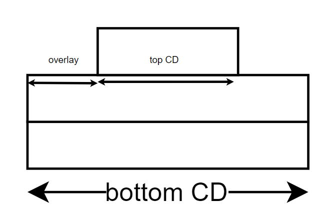

Tutorial for Strong castle model
This tutorial shows how to do simulations using strong castle model and how to fit the experimental data using this model.
[1]:
from cdsaxs.fitter import Fitter
from cdsaxs.simulations.strong_castle import StrongCastleSimulation
import numpy as np
Simulation
Prepare the data
[2]:
pitch = 100 #nm distance between two trapezoidal bars
qzs = np.linspace(-0.5, 0.5, 201)
qxs = 2 * np.pi / pitch * np.ones_like(qzs)
#Initial parameters
dwx = 0.1
dwz = 0.1
i0 = 10
bkg = 0.1
y1 = 0.
height = 10.
bot_cd = 40.
top_cd = 20.
swa = [90., 90.0, 90.0]
overlay = 10
#fixed parameters not be fitted
n1 = 2
n2 = 1
langle = np.deg2rad(np.asarray(swa))
rangle = np.deg2rad(np.asarray(swa))
overlay_params = {'heights': height,
'langles': langle,
'rangles': rangle,
'y_start': y1,
'bot_cd': bot_cd,
'dwx': dwx,
'dwz': dwz,
'i0': i0,
'bkg_cste': bkg,
'overlay': overlay,
'top_cd': top_cd,
'n1': n1,
'n2': n2,
}
There are only 4 parameters that are different from the stacked trapezoid model, namely overlay, top_cd, n1 and `n2.
So the above parameters give us the following cross section:

n1 and n2 correspond to the number of trapezoids in the bottom and top part of the model respectively.
Discussion about other parameters can be found in the stacked trapezoid model tutorial.
Now we will calculate the intensity exactly with strong castle model and plot the data.
[3]:
Simulation1 = StrongCastleSimulation(qys=qxs, qzs=qzs)
intensity = Simulation1.simulate_diffraction(params=overlay_params)
#plot
import matplotlib.pyplot as plt
plt.plot(qzs, intensity)
plt.xlabel(r'$q_{z}$')
plt.ylabel('Intensity')
plt.title('Stacked Trapezoid diffraction simulation')
[3]:
Text(0.5, 1.0, 'Stacked Trapezoid diffraction simulation')
Fitting
We will do exactly the same steps as in the stacked trapezoid model tutorial. We will use the calculated intensities above as experimental and fit them with the strong castle model.
[4]:
import matplotlib.pyplot as plt
intensity_noisy = intensity + np.sqrt(intensity) * np.random.normal(0, 50, intensity.shape)
plt.plot(qzs, intensity, label='original')
plt.plot(qzs, intensity_noisy, label='added noise')
plt.ylabel('Intensity')
plt.xlabel('qz')
plt.legend()
initial_params = {'heights': {'value': height, 'variation': 10E-3},
'langles': {'value': langle, 'variation': 10E-3},
'rangles': {'value': rangle, 'variation': 10E-3},
'y_start': {'value': y1, 'variation': 10E-3},
'bot_cd': {'value': bot_cd, 'variation': 10E-3},
'dwx': {'value': dwx, 'variation': 10E-5},
'dwz': {'value': dwz, 'variation': 10E-5},
'i0': {'value': i0, 'variation': 10E-5},
'bkg_cste': {'value': bkg, 'variation': 10E-5},
'overlay': {'value': overlay, 'variation': 10E-3},
'top_cd': {'value': top_cd, 'variation': 10E-3},
'n1': n1,
'n2': n2,
}
StrongCastle1 = StrongCastleSimulation(qys=qxs, qzs=qzs, initial_guess=initial_params)
Fitter1 = Fitter(Simulation=StrongCastle1, exp_data=intensity_noisy)
bestfit,fitness = Fitter1.cmaes(sigma=10, ngen=100, popsize=1000, mu=10, n_default=15, restarts=10, tolhistfun=10E-5, ftarget=10, restart_from_best=True, verbose=False)
print(bestfit)
height1 langle1 langle2 langle3 rangle1 rangle2 rangle3 \
0 10.03779 1.651405 1.480153 1.592135 1.54748 1.708779 1.546373
y_start bot_cd dwx dwz i0 bkg_cste overlay \
0 0.017236 40.000198 0.098872 0.100022 10.000337 0.099607 9.962454
top_cd
0 19.999823
[5]:
with np.errstate(divide='ignore', invalid='ignore'):
stats = Fitter1.mcmc_bestfit_stats(N=15, sigma = 100., nsteps=200, nwalkers=1000)
print(stats)
15 parameters
100%|██████████| 200/200 [00:19<00:00, 10.10it/s]
mean std count min max lower_ci \
height1 10.032762 0.154237 99987 8.643961 14.159510 10.031506
langle1 1.623662 0.050105 99987 0.190842 3.043659 1.623254
langle2 1.519561 0.066288 99987 0.058702 2.991455 1.519021
langle3 1.565897 0.066249 99987 0.156458 3.109113 1.565357
rangle1 1.489218 0.065244 99987 0.503257 2.847647 1.488687
rangle2 1.699659 0.067377 99987 0.002289 2.783351 1.699110
rangle3 1.529950 0.067966 99987 0.387656 3.065067 1.529396
y_start 0.457200 0.089482 99987 0.001071 1.319225 0.456471
bot_cd 39.984972 0.140185 99987 37.437256 41.138759 39.983830
dwx 0.098333 0.000941 99987 0.070365 0.127836 0.098326
dwz 0.100564 0.000768 99987 0.066336 0.108642 0.100558
i0 10.000036 0.000861 99987 9.958191 10.012195 10.000029
bkg_cste 0.099234 0.001000 99987 0.083602 0.113223 0.099225
overlay 9.806060 0.116891 99987 8.054958 13.368229 9.805108
top_cd 20.008583 0.087218 99987 18.643542 21.149993 20.007873
upper_ci uncertainity
height1 10.034019 0.001257
langle1 1.624070 0.000408
langle2 1.520101 0.000540
langle3 1.566436 0.000540
rangle1 1.489750 0.000532
rangle2 1.700208 0.000549
rangle3 1.530504 0.000554
y_start 0.457929 0.000729
bot_cd 39.986114 0.001142
dwx 0.098341 0.000008
dwz 0.100570 0.000006
i0 10.000043 0.000007
bkg_cste 0.099242 0.000008
overlay 9.807013 0.000952
top_cd 20.009294 0.000711